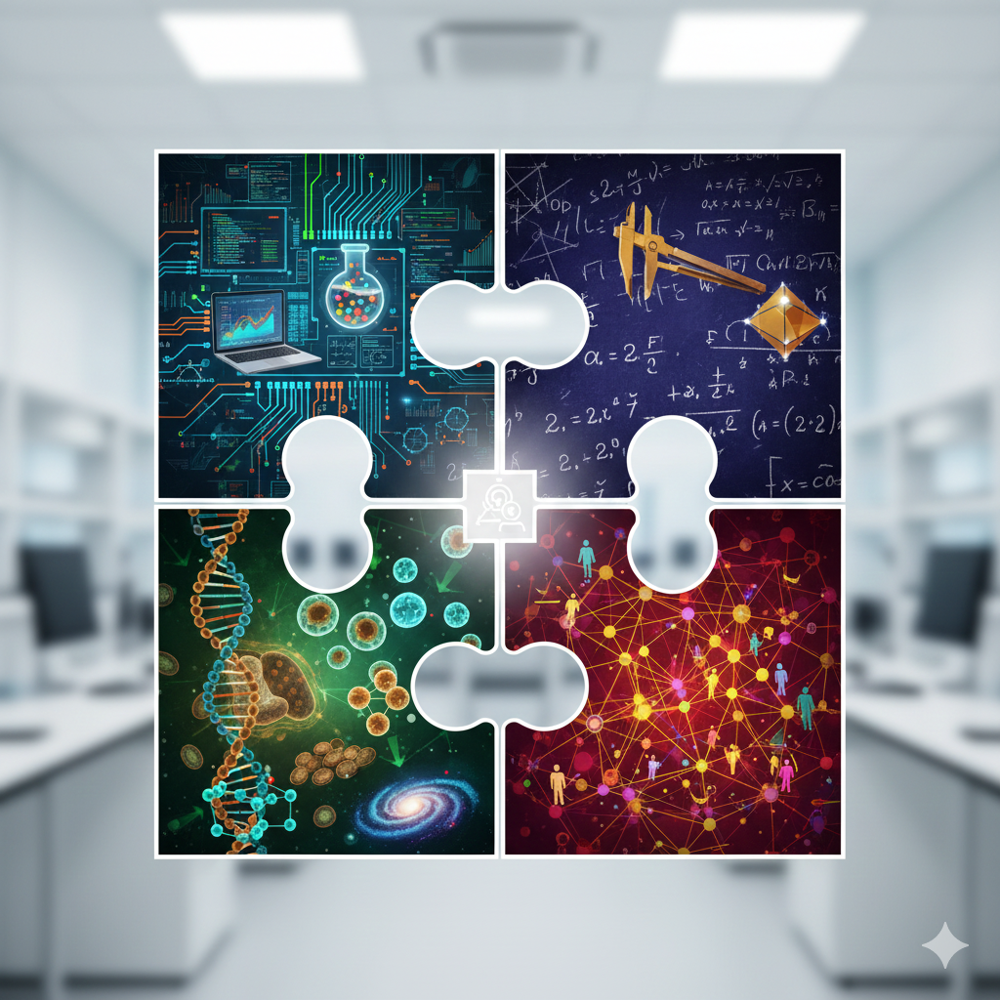

About
The Kachman CATALYST Lab operates at the cutting edge of interdisciplinary science, coalescing ideas and approaches from machine learning, complexity theory, network science, and deep numerical modeling, all to tackle cutting edge problems in artificial intelligence and the natural sciences. Check out the research page for more in depth of current themes we are interested in We are located in the beautiful city of Nijmegen in Radboud university and distributed between the artificial intelligence, Data science, and Institute for Molecules and Materials
Radboud Campus
Houtlaan 4
Thomas van Aquinostraat 4
6525 XZ Nijmegen, Netherlands